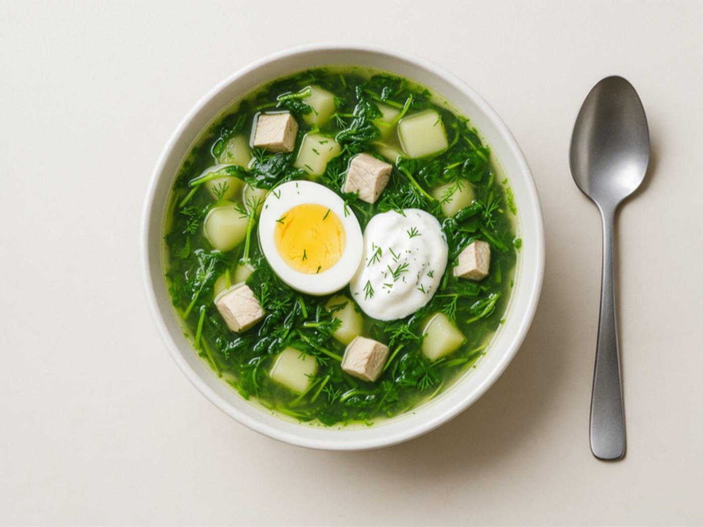

Обіди · № 028
Зелений борщ зі щавлем
50 хвчас
6порції
8інгредієнтів
КБЖВ · ПП-версіяна порцію
207ккал
25 гбілки
6 гжири
13 гвуглеводи
Класична версія: 351 ккал · Ж 25 г → тут на 41% менше калорій
На 100 г: 86 ккал · Б 10 · Ж 3 · В 6. Розраховано за інгредієнтами рецепта, значення приблизні.
Повний рецепт — за підпискою
Інгредієнти з точними грамовками й покрокове приготування страви «Зелений борщ зі щавлем» доступні в платному Telegram-каналі Артема Трачука. Підписка відкриває всі 100 ПП-рецептів.
- 8 інгредієнтів з точними грамовками
- 4 кроки приготування
- КБЖВ і нові рецепти щотижня
Вже підписані? Увійдіть через Telegram, і рецепт відкриється тут.
Безкоштовно: усі рецепти розділу «Сніданки».